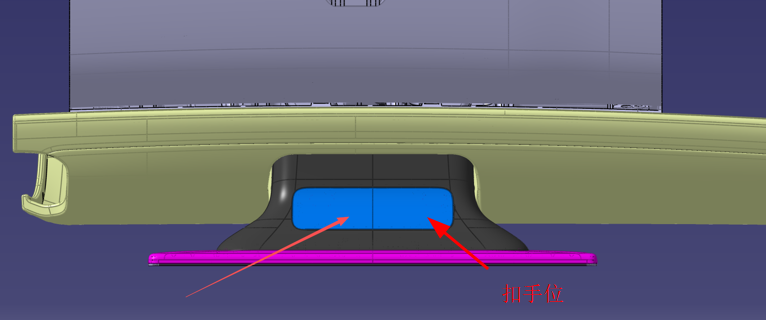
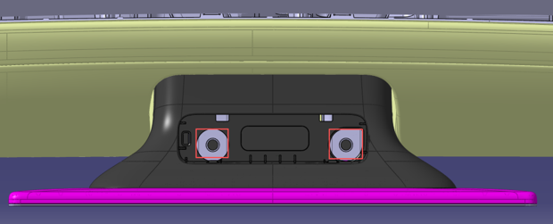

Снятие и установка экрана 14.6 дюйма / 15.6 дюйма
Процедура ремонта при замене центрального экрана управления, процедура сопряжения:
1. Демонтировать декоративную накладку: с помощью лопатки поддеть крышку винта из паза ручки справа / отщелкнуть фиксаторы по периметру декоративной накладки;
2. Выкрутить 2 болта крепления дисплея, выдвинуть дисплей на некоторое расстояние в направлении оси X;
3. Демонтировать жгут проводов: вручную отвести фиксатор штекера, отсоединить разъем, извлечь жгут проводов из мест крепления на кронштейне экрана;
4. Установка выполняется в порядке, обратном демонтажу.

